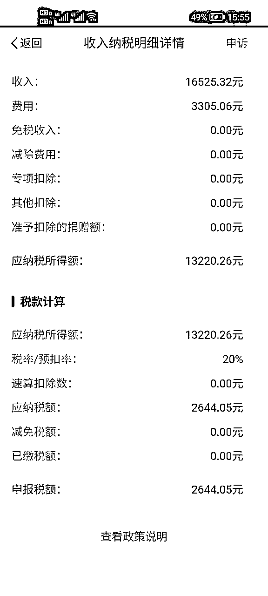
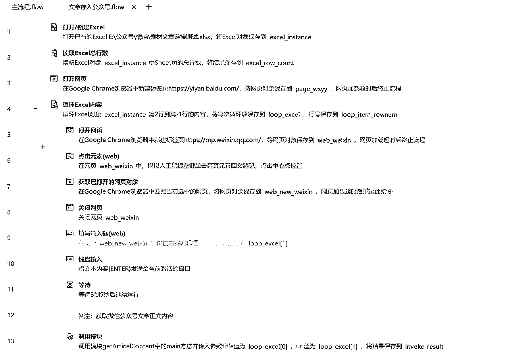
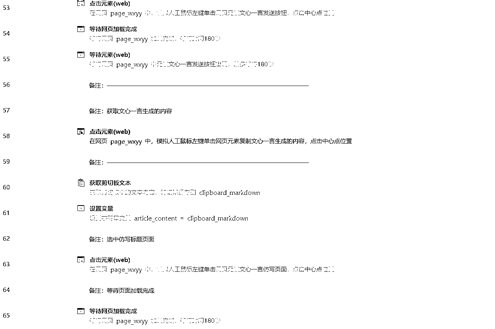

来源：https://buebeaaf96.feishu.cn/docx/WLsYdgzRqoJCklxNKr0crywsnbf
大家好，我是仙剑侠客，无写作基础，去年下半年开始做公众号爆文项目，不到半年收益6位数。
单篇文章有过百万阅读量。
中间也经历了流量起伏、投诉、封号，有一些经验分享给大家。
今天做个复盘希望对正在做这个项目或准备做这个项目的圈友有所帮助。
几年前也刷到过一些公众号文章，发现里面有广告，但不知道这就是靠流量主赚钱。
去年听过微信流量主信息，当时做的人不是很多，也没有放在心上。
后来了解了下之前微信公众号文章主要靠粉丝来阅读，没有推荐流量。现在微信为了吸引更多用户把时间花在平台上开始给公众号账号推流，0粉账号的文章也有机会被用户刷到。
有流量的地方就有钱，这就是公众号爆文的机会。
项目原理：公众号满足500粉丝后开通流量主功能，写文章当字数满足一定要求后会在文章内自动插入两条广告，微信用户刷到文章点击广告就有收益。
广告商在微信投广告，我们写文章给微信贡献内容，有内容了才会有人来微信看文章，腾讯分一些广告费给我们。
优势：变现路径短，当天发布的文章，第二天就会推送收益信息，正反馈快。
收益可靠，腾讯每半个月会发送一次收益账单并自动把钱打到银行卡中，哪怕只有1分钱也会给你
项目长期可做，只要微信不死，就永远可以做
劣势：流量有时候起伏较大;如果有写作基础会更好;有些内容会被投诉，要在实战中积累经验
去年下半年报名了实战，SOP文档里有很多领域，也不知道从何下手。
当时手里正好有一个通过视频号涨了几万粉的公众号，这个公众号当时注册就发了两条视频后来就没管了，后面无意中发现公众号可以绑定视频号涨粉，操作了几个月涨了几万粉。
于是决定用这个公众号来写，有了几万粉丝直接开通了流量主。
一开始实在不知道写什么，直到刷到了2023.9.5下午狗哥朋友圈发的八卦，第一篇文章才正式出炉。这个八卦大家感兴趣也可以看看。
用微信截图提取图片中的文字，就最后一行字没有写，其他一字不差2023.9.6发表第一篇公众号爆文文章，阅读量160，狂赚6.54元
这个秘密到今天之前只有天知地知。
这个公众号的第一篇文章收入到让我迅速看到了正反馈，而且还是白嫖的。
到现在狗哥还不知情，我也没有给狗哥买过一瓶水，说实话有点愧疚。
不过这个号到现在都没有推荐流量，每篇文章都是粉丝贡献的阅读量，也没有破千的阅读的文章，阅读量不高胜在收益相对稳定，投产比高。
有了第一个账号的正反馈后，后面陆续注册了汽车、育儿、地理、体制领域的个人账号，基本上是一个领域一个账号来测试。
如果不知道写什么就多测试，从自己感兴趣的领域开始。
准备好账号后就开始都在微信“看一看”手动刷对标账号，然后使用文心一言分析文章内容并仿写。
由于chatgpt使用有点小门槛，那段时间还经常崩，所以就选择了文心一言来写作。
大部分人用的都是chatgpt,chatgpt指令的使用分享也较多，同一指令在不同AI平台的使用效果也不一样。
自己根据文心一言指令的写作效果不断调整指令，有时一篇文章要写好几篇，同时还要写好几个领域，就有点痛苦。
2023年年底文心一言出了4.0付费版，有一个月的公测期，抢到了一个月公测名额后发现4.0比原来的效果好一些，还可以对相关文字加粗突出重点内容，后来指令测试相对稳定后就一直用文心一言4.0。
经过一个月左右的坚持日更，每个测试领域都出了爆款，每个领域一个月收入最少过百，最多上千，有的账号单日破千。
这张图是2023.10.4早上起床看到的另外一个账号第一个爆款收入，距离发布第一篇文章刚好差不多1个月，从日入6.54到日入破千，那是相当激动，特意截了个图留个纪念，各位有过这种感觉吗？
当然也不是每天都有这么多收入，流量的波动起伏很正常，可能今天天上，明天地下，心态要好。

经过一个多月的测试后，找到自己感兴趣、写作难度不大的领域，增加此领域账号数量，复制成功的账号。
感兴趣才有可能写出爆款，我就对娱乐不感兴趣，即使刷到千万阅读的文章也会直接划走，更不用说写此类文章了，即使写了更不用谈出爆款。
当然也有同时写几个领域并出结果的，这也跟个人的兴趣和精力有关，也不是绝对答案。
一个账号的流量不稳定，多账号运营会获得相对稳定的收益。
解决多账号的问题可以用亲戚的身份注册公众号，也可以用企业主体注册最多50个账号。
个人身份账号相对来说比较容易入池，企业账号入池较少，我也有企业账号入池。
企业主体注册账号时前面账号有违规会影响后面注册，我注册了10几个企业主体账号，由于前面有账号违规，再注册账号时就不让注册。
账号多了可以用chrome浏览器多开登录多个账号，也可用其他浏览器分流几个账号。
到了发钱的时间，个人主体账户腾讯会代扣20%的税，这个是属于劳务报酬，税还是相当高的，每年3月份左右可以在个人所得税APP退一部分。

企业主体的账号必须要用对公账户收款，个体户账号可以委托法人个人银行卡收款。
企业主体收到腾讯结算单后需要开专票并寄给腾讯或上传电子发票后腾讯才会打钱到企业公户， 我所在的地区公司可以开1%的专票，不知道其他地方税收是否有区别。
账号多了一个人手动操作肯定忙不过来，这时个提效利器RPA就派上用场了。
我是去年年初听过RPA，当时项目没有起色也没有研究，下半年手动操作公众号爆文跑通项目一个多月后开始把RPA应用到项目上来提高效率。
RPA就是模仿人与软件交互，大部分场景下人工重复操作它都能干，它就是一个无情的机器人，你可以让它没日没夜的干活。
自己写了一个读取excel中微信文章链接并仿写保存到微信草稿中的影刀RPA小程序，自已也在用，不到1分钟完成一篇文章。
大家先看下效果：
提前登录微信公众号和文心一言账号，关闭登录后的页面
循环从excel中读取文章链接内容发给文心一言来仿写
复制文心一言生成的文章内容粘贴到公众号编辑框
复制原标题到公众号
选择文章类别，填写作者，保存为草稿



大家可以根据自己的文章领域测试好AI指令后，在23行双击修改。
灰色禁用的指令也可以右键启用指令，禁用指令实现的是什么功能都有备注，可根据情况启用

文章标题是直接复制原标题，然后手动微改，禁用的代码中也有仿写标题的指令，也可以仿写标题后复制到公众号
文章图片是手动在百度图片中搜索与文章内容相关的图片，这样感觉真实些，也花不了多少时间
文章发布是把文章内容过一遍后手动发布
需要的可以点击下面链接获取程序，交个朋友
https://api.winrobot360.com/redirect/robot/share?inviteKey=19af6678b35c010b
获取应用后打开影刀客户端，在“我获取的应用”中就可以找到获取的应用。
有其他RPA需求的欢迎交流。
有些圈友写了几天0阅读就问“怎么没有流量”？这就好比你刚在镇上开了一家店，才几天就说“怎么没人来买东西”？如果在微信用户没有增长的基础上，涌入这个项目的人不断增加，而别人写的时间比你久比你好选的领域也比你好，你凭什么有流量？
写什么领域也不是靠想的，要靠测试，只有写了才知道有没有人看，躺着赚钱的人很少。
号少就提高每篇文章的写作质量，号多就矩阵提高成功概率。
平台规则也在不断变化，就跟菜市场的菜价一样，每天可能都不一样，有几天波动特别大，可能那几天天气很差，交通运输不畅导致菜的供应减少。
上图21万+阅读量是我新号的第一篇文章，当时发布后也不是当天就这么高阅读量，应该是过了一段时间突然推流的，要不是我写这篇贴时去看下发表记录我都不知道这个号第一篇文章有这么高的阅读量。
第二篇开始阅读量就回到3位数了，这就是正常现象。不要有过多猜想，继续写就完了。
坚持日更在经历了半个月左右的2位数、3位数、4位数阅读后，开始出现多个10W+阅读，有篇文章达到了百万阅读量。
如果坚持一段时间阅读量一直很低，可以看看同行阅读量是不是也很低，进而判断是不是大环境都这样，或者寻找新的领域。
当账号做起来后自己的账号就会成为同行的对标账号，有时还会被同行举报，也有一些互联网闲得无事的人也会举报甚至私信谩骂。
可以在公众号后台：设置与开发——公众号设置——功能设置——隐私设置，禁止通过名称搜索到本账号，这样只是同行搜不到公众号名称，但公众号文章依然能刷到。
被投诉“不规范使用原创功能”时一般会取消账号原创功能三天，时间到了会自动恢复原创功能，文章标记了原创，流量主收益会比不标原创的文章收益高。
滥用原创声明功能，一般写的文章与对标账号太相似被投诉，还有一种情况是有些内容不能标记为原创而你却标记为原创被投诉。
一般只要不是腾讯自动检测出来的，没人投诉即使标原创了也没事，如果有人投诉，0阅读也会被处理。
哪些内容不能写，哪些内容不能标原创，哪些情况会被平台处理，都写在微信公众平台运营规范中https://mp.weixin.qq.com/mp/opshowpage?action=newoplaw，一定要去看看平台规则。
账号受到平台处罚对于新人来说或多或少会遇到，出现这种情况说明你的账号大概率已经做起来了，引起了很多人的关注。
提前熟悉平台规则可以减少受到平台关照的机会。
违反平台规则，情况严重会被封号，我有个账号被封了两个月，两个月后账号解封了但账号关注功能被屏蔽两个月。
被封号有一次申诉机会，申诉了基本没用。
至于号封多久要看腾讯心情，我是第一次就封两个月，也有其他人封一个月的，这个不一定。
这个号解封后依旧在发文章，但基本都是粉丝在阅读，没有推荐流量，一个号如果没有推荐流量就不会有爆款，很难再赚钱了。
自己关注的对标账号有不少文章点进去显示违规，也有一些号一两个月没有更新了，可能就是被临时封了，如果看到对标账号出现这种情况，及时删除和对标账号相似内容的文章，避免被处理。
做项目的过程中会遇到各种问题，别人赚钱的背后都是踩过各种䟘，解决了各种问题。
如果你没有收到私信被骂，账号没有受到平台处罚，说明你的账号还没做起来。
在成本较低的情况下拿到正反馈，更有信心做下去。
要坚持，先写一个月两个月。
账号做起来了，有感觉了，迅速复制，而RPA就是手中的利剑，如果没有及时用上RPA，我也做不了几个账号，收益一眼就看到底。
如果没有找到合适的方向，多下场实操，每个项目虽然不一定有大结果，但每一个项目都会学习一些技能，这些技能等到有合适的机会就会派上用场。
比我厉害的大佬很多，以上絮叨是个人的一点小感悟，希望对你有所启发。
我是仙剑侠客，专注于RPA应用场景研究和落地，为个人、团队和企业降本增效。